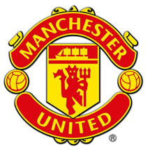

|  | Manchester United Football Club is an English football club, based at the Old Trafford stadium in Trafford, Greater Manchester, and is arguably the most popular football club in the world, with over 330 million supporters worldwide– almost 5% of the world's population. The club was a founding member of the Premier League in 1992, and has played in the top division of English football since 1938, with the exception of the 1974–75 season. Average attendances at the club have been higher than any other team in English football for all but six seasons since 1964–65.[7] The club is the second most successful in the history of English football and by far the most successful of recent times, having won 20 major honours since the start of Alex Ferguson's reign as manager in November 1986. They are the Premier League's reigning champions, and have won England's top division 17 times, one short of Liverpool's record of 18 league titles. In 1968, they became the first English club to win the European Cup, beating S.L. Benfica 4–1. They won a second European Cup as part of an unprecedented Treble in 1999, before winning their third in 2008, 40 years almost to the day after their first. The club also holds the record for the most FA Cup titles with 11. Since the late 1990s, the club has been one of the richest in the world with the highest revenue of any football club, and is currently ranked as the richest and most valuable club in football, with a value of £897 million (€1,333 million / $1.8 billion) as of May 2008. Manchester United was a founding member of the now defunct G-14 group of Europe's leading football clubs and its replacement, the European Club Association. Alex Ferguson has been manager of the club since 6 November 1986. The current club captain is Gary Neville, who succeeded Roy Keane in November 2005. |